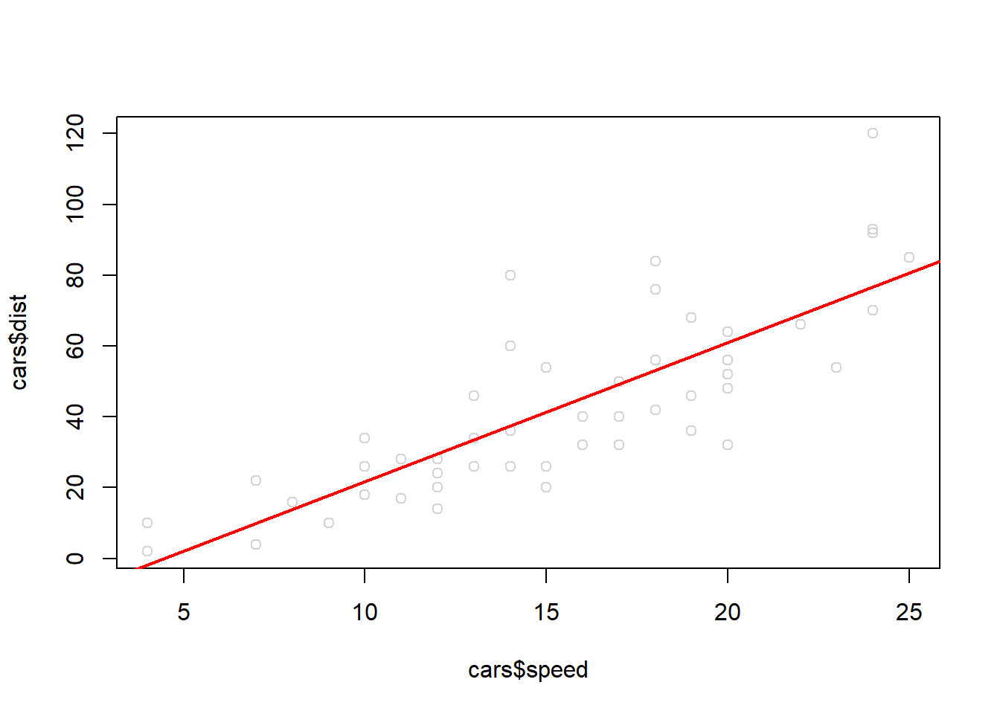

第13章 回帰分析における推定と検定
13.1 単回帰分析
carsデータを使う．散布図

speedを独立変数，distを従属変数とする回帰分析を実行する．
##
## Call:
## lm(formula = dist ~ speed, data = cars)
##
## Residuals:
## Min 1Q Median 3Q Max
## -29.069 -9.525 -2.272 9.215 43.201
##
## Coefficients:
## Estimate Std. Error t value Pr(>|t|)
## (Intercept) -17.5791 6.7584 -2.601 0.0123 *
## speed 3.9324 0.4155 9.464 1.49e-12 ***
## ---
## Signif. codes: 0 '***' 0.001 '**' 0.01 '*' 0.05 '.' 0.1 ' ' 1
##
## Residual standard error: 15.38 on 48 degrees of freedom
## Multiple R-squared: 0.6511, Adjusted R-squared: 0.6438
## F-statistic: 89.57 on 1 and 48 DF, p-value: 1.49e-12\(t\)値を係数と標準誤差から計算してみる．
## [1] 9.46399## [1] 1.489919e-12回帰直線をプロット．

最適化optim関数を使って，自力で最小二乗法を実行する．
## $par
## [1] -17.571729 3.931832
##
## $value
## [1] 11353.52
##
## $counts
## function gradient
## 91 NA
##
## $convergence
## [1] 0
##
## $message
## NULL分散共分散から係数を求める．
cov_cars<-cov(cars)
mean_speed<-mean(cars$speed)
mean_dist<-mean(cars$dist)
c(mean_dist-cov_cars[1,2]*mean_speed/cov_cars[1,1],
cov_cars[1,2]/cov_cars[1,1])## [1] -17.579095 3.93240913.2 重回帰分析
mtcarsデータを使う
## mpg cyl disp hp drat wt qsec vs am gear carb
## Mazda RX4 21.0 6 160 110 3.90 2.620 16.46 0 1 4 4
## Mazda RX4 Wag 21.0 6 160 110 3.90 2.875 17.02 0 1 4 4
## Datsun 710 22.8 4 108 93 3.85 2.320 18.61 1 1 4 1
## Hornet 4 Drive 21.4 6 258 110 3.08 3.215 19.44 1 0 3 1
## Hornet Sportabout 18.7 8 360 175 3.15 3.440 17.02 0 0 3 2
## Valiant 18.1 6 225 105 2.76 3.460 20.22 1 0 3 1hpとwtよりmpgを説明する．
##
## Call:
## lm(formula = mpg ~ hp + wt, data = mtcars)
##
## Residuals:
## Min 1Q Median 3Q Max
## -3.941 -1.600 -0.182 1.050 5.854
##
## Coefficients:
## Estimate Std. Error t value Pr(>|t|)
## (Intercept) 37.22727 1.59879 23.285 < 2e-16 ***
## hp -0.03177 0.00903 -3.519 0.00145 **
## wt -3.87783 0.63273 -6.129 1.12e-06 ***
## ---
## Signif. codes: 0 '***' 0.001 '**' 0.01 '*' 0.05 '.' 0.1 ' ' 1
##
## Residual standard error: 2.593 on 29 degrees of freedom
## Multiple R-squared: 0.8268, Adjusted R-squared: 0.8148
## F-statistic: 69.21 on 2 and 29 DF, p-value: 9.109e-12\(t\)値を確認する．
## [1] -3.518712## [1] 0.001451229## [1] -6.128695## [1] 1.119647e-06\(F\)値も確認する．
## [1] 69.21121## [1] 9.109047e-12以下参考．回帰係数を自力で求める． c.f 永田靖・棟近雅彦，2001，『多変量解析法入門』サイエンス社．
X<-cbind(rep(1,nrow(mtcars)),mtcars$hp,mtcars$wt)
XX<-t(X)%*%X
Xy<-t(X)%*% mtcars$mpg
solve(XX) %*% Xy## [,1]
## [1,] 37.22727012
## [2,] -0.03177295
## [3,] -3.87783074